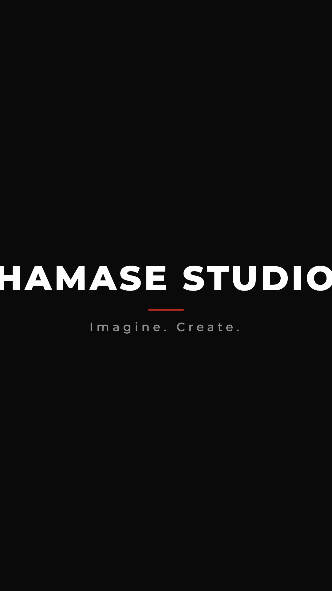
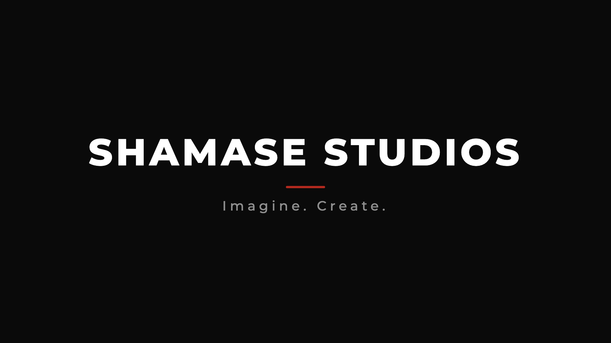
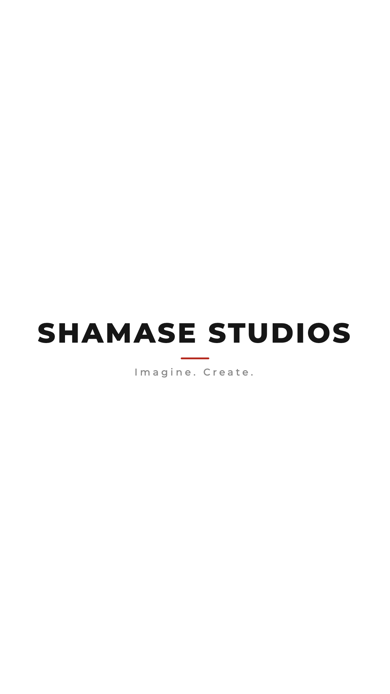
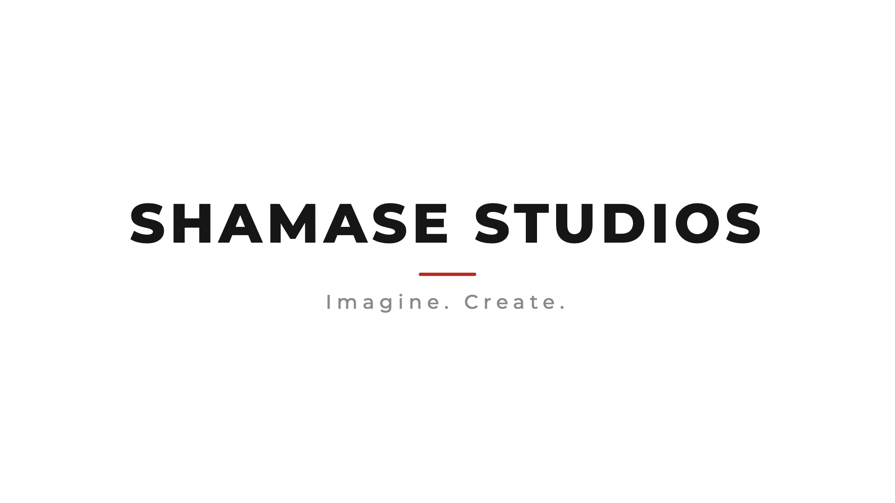
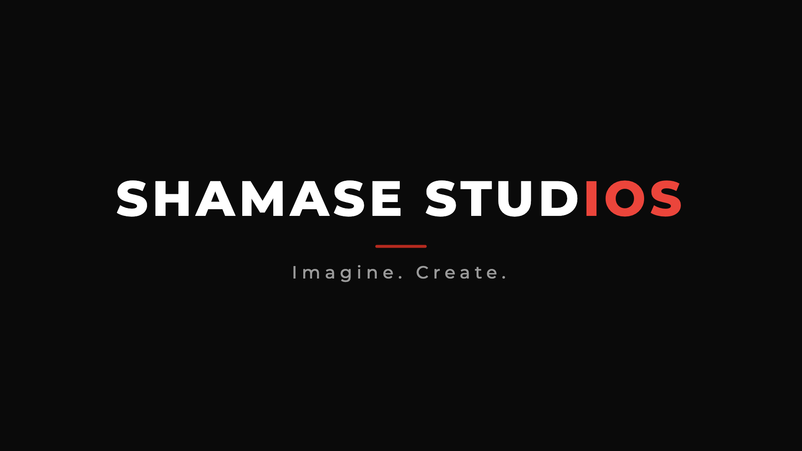
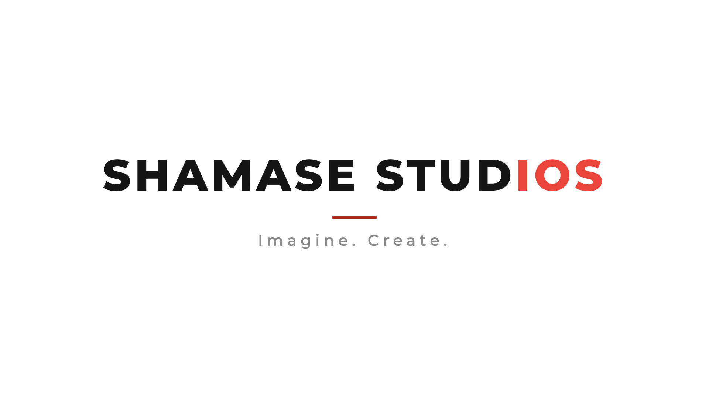
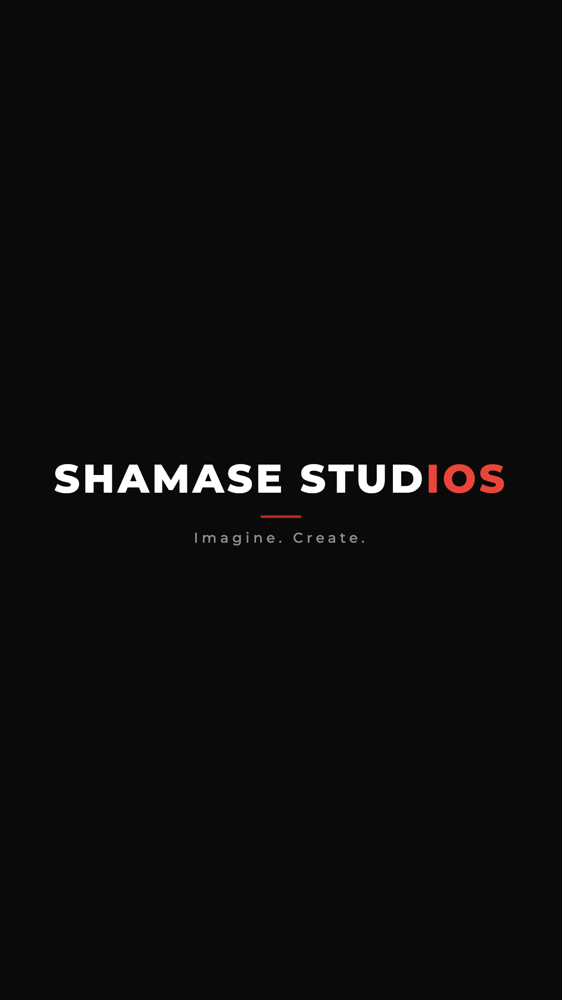
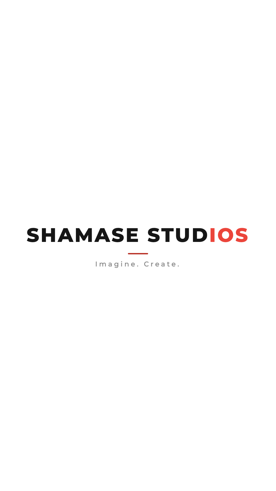

Shamase Studios, Logo Kit
Final: red line under name. Vertical = 9:16. Two-tone = STUDIOS.
Primary (mono)

1 vertical dark line
2 landscape dark line
3 vertical white line
4 landscape white lineTwo-tone (IOS accent)

tt landscape dark
tt landscape white
tt vertical dark
tt vertical white